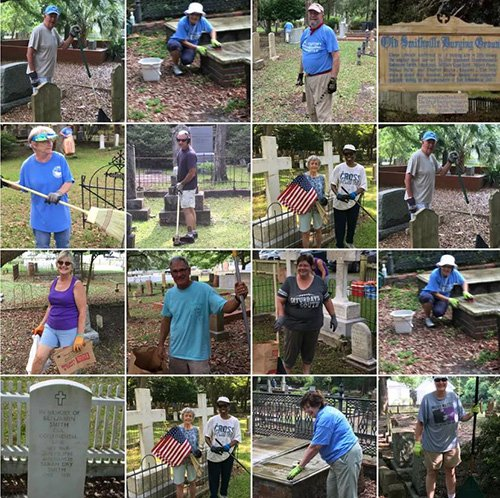

This is where the bodies are buried…
Well, at least some of them. As you meander through the quaint streets of Southport you’ll find the Old Smithville Burying Ground at the corner of Nash and Rhett streets. Shaded by giant oak trees, this peaceful well-kept cemetery has been the resting place for 1,093 souls for over 200 years. Occupants include ship captains, river pilots, and many well-known characters that left their indelible mark on Southport. According to historians, some graves may date back to the mid-1700s. Some old wooden markers have been lost.


Living Voices of the Past
The Old Smithville Burying Ground is always interesting to explore, but it’s even more fascinating if you can catch one of the special Living Voices of the Past events. During these events, you’ll meet several historic Southport characters who have “come to life” to tell you their stories. Hear about the real history of Southport through the eyes of local icons such as Kate Stuart, Mayor Leonard T. Yaskell, Sarah Curtis, Jessie Stevens Taylor, and many others.
Living Voices events are typically held on the weekend prior to Halloween. Contact SHS at info@southporthistoricalsociety.org for more information or if you would like to portray a historical character (training provided!)
